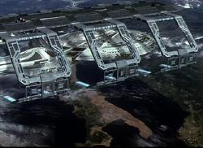

|
|
Star Trek: Nemesis
Star Trek: La nemesi
|
 |
Cast
Data Stellare 56844.9: Mentre l'equipaggio dell'Enterprise si
sta accingendo a celebrare le nozze di Deanna Troi e William Riker,
un'improvvisa chiamata dalla
Flotta Stellare obbliga la nave a recarsi su
Romulus per un'inattesa missione
diplomatica, in quanto, dopo una lunga inimicizia, i
Romulani hanno deciso di aprire quei
negoziati che potrebbero, alla fine, portare alla pace. Ma, arrivata su
Romulus, l'Enterprise e il suo
equipaggio si trovano davanti ad una minaccia che potrebbe portare alla
distruzione della Terra e Picard si confronterà con il più pericoloso avversario
che abbia mai incontrato.
- William Riker e Deanna Troi si sposano.
- Picard dice di aver rappresentato la Federazione in 27 primi contatti con
specie aliene.
- Vediamo per la prima volta un veicolo per ricognizioni al suolo della
Federazione; si tratta di una sorta di jeep con struttura tubolare armata di
phaser.
- Apprendiamo che Kathryn Janeway è
stata promossa Ammiraglio.
- Vediamo per la prima volta Remus.
- Debuttano i Remani.
- Apprendiamo che Picard da giovane è stato colpito dalla
Sindrome di Shalaft.
- Jean-Luc Picard dice di essere il primo Picard ad aver lasciato il sistema
solare.
- L'Enterprise subisce seri danni per la collisione contro la
Scimitar.
- Picard usa l'autorizzazione Alpha Alpha Three Zero Five per tentare di
attivare l'autodistruzione.
- Muore Data.
- A Riker viene assegnato il comando della USS Titan, la cui prima
missione sarà nella Zona
Neutrale per un incontro con i
Romulani.
- Data canta Blue Skies nella versione di Irving Berlin.
- I nuovi tricorder utilizzati sono molto simili agli iPAQ di Compaq/HP e
richiamano quelli che si vedono in
Enterprise.
- Il nuovo logo dell'Impero Romulano è stato disegnato da Rick Sternbach.
- Secondo quanto detto da Rick Berman, è
stato Brent Spiner a far conoscere John
Logan alla produzione.
- Per il ruolo di Shinzon si era pensato in origine a Jude Law.
- Denise Crosby aveva discusso con Rick
Berman la possibilità di utilizzare Sela nel film, ma non è stato trovato il
modo di inserirla nella storia.
- L'intervallo di quattro anni tra questo film e il precedente è il più
lungo tra i film di Star Trek.
- A metà delle riprese è stata rubata dal set la poltrona del capitano.
Mentre si cercava di risolvere il problema,
Scott Bakula, che stava girando gli episodi di
Enterprise nel set accanto,
ha regalato a Patrick Stewart una poltrona
sostitutiva di legno con le scritta CAPTAIN dipinta a mano.
- Il cameo di Kate Mulgrew doveva essere
di Jeri Ryan. La sostituzione è avvenuta
quando Jeri Ryan ha ottenuto una parte in
Boston Public.
-
Nella
scena finale con l'Enterprise nel bacino orbitale è ben distinguibile
l'Italia e specialmente l'Italia meridionale [T:1:45:20].
- Secondo un'intervista a Rick Berman,
dopo il primo montaggio la lunghezza del film era eccessiva (quasi 3 ore) e si
sono resi necessari dei tagli che hanno incluso l'apparizione di
Wil Wheaton nei panni di
Wesley Crusher,
giudicata non essenziale per lo svolgimento della trama.
- In The Swarm sembrava che il
Dottore avesse perso la memoria e la
personalità, ma alla fine si ricorda le parole dell'opera con cui apriva
l'episodio. Nel film pare che B-4 non si ricordi niente di Data, ma alla fine
canta la canzone con cui Data apre il film.
- A tavola con LaForge, al posto di Guinan, avrebbe dovuto esserci Leah
Brahms, vista in Booby Trap e
Galaxy's Child.
- Durante il ricevimento, una delle prime versioni dello script prevedeva
una chiaccherata fra Worf e Beverly a proposito della carriera diplomatica del
Klingon.
- Nel film viene citata la USS Archer, un chiaro omaggio al
capitano
di un'altra
Enterprise.
- Il timoniere Branson è quello che viene espulso all'esterno della nave a
seguito di un'esplosione.
- Durante l'attacco della
Scimitar, Riker
ordina lo schema difensivo Kirk Epsilon [T:1:12:36].
- Nella sala tattica di Picard c'è un modellino in materiale trasparente
dell'Enterprise-E
[T:1:13:55].
- Il vino che gli ufficiali bevono quando brindano alla memoria di Data è
uno Chateau Picard.
- Titoli nelle altre lingue:
- Jornada nas Estrelas: Nêmesis (Portoghese)
- Némesis (Spagnolo)
- Quando Data ha il telecomando per controllare l'Argo, su un display
della jeep si vede un bottone con la scritta LCARS 47 e subito di fianco un
altro con il numero 047 [T:0:17:21] [T:0:17:26] [T:0:17:35].
- Quando il timoniere imposta la rotta per
Romulus, sulla sua console si vede un bottone 3-D con la scritta 5749
[T:0:21:55].
- Quando Worf esegue l'analisi tattica della
Scimitar, sul
display compaiono i numeri 4756 e due numeri 8847 [T:0:27:00]. Questa
schermata ricompare durante l'attacco della
Scimitar a
[T:1:12:11].
- Nella schermata in cui il computer confronta il DNA di Picard e di Shinzon
c'è scritto DNA COMPARISON SCAN 02947 [T:0:33:53]. La stessa schermata compare
sullo sfondo a [T:0:34:03].
- Quando B-4 si siede alla console per scaricare i dati per Shinzon, sulla
console compaiono i numeri incolonnati 4, 9, 7, 44, 3 (44 + 3 = 47)
[T:0:38:26].
- Geordi mostra al capitano Picard un diagramma dei sensori in cui, tra gli
altri, compare un numero le cui ultime cifre sono 94347 [T:0:44:59]; nel
medesimo diagramma c'è il numero 70425, 07036.22547075, 00350.47456
[T:0:45:13].
- La schermata a cui accede Data intitolata SHORT-RANGE SCAN 1028 a
[T:1:08:26] contiene sulla parte superiore tra gli altri, i numeri 947, 8947,
4758, 7489, 8745, 874, 748 e 745. La stessa schermata sulla sinistra ha un
riquadro azzurro dell'interfaccia LCARS contrassegnato col numero 254 (2 + 5 =
7).
- Sullo schermo del computer a [T:1:08:30] ci sono i numeri 42945768 (9 - 2
= 7), 89748967542.
- Il numero di scafo della Intrepid è 74600 [T:1:10:14].

- Durante la battaglia prima che venga speronata la
Scimitar La
Forge legge lo stato dell'Enterprise su un diagramma in cui si vede un 04-7
evidenziato (vedi immagine a lato) [T:1:20:45].
- A [T:1:21:04] una voce fuori campo dice «Schema 9 punto 4» (94 è il doppio
di 47).
- Prima che Troi attivi i propulsori per speronare la
Scimitar, sulla
sua consolle si vede chiaramente un 146 (46 + 1 = 47).
- Dopo la distruzione della plancia, Data dice che i banchi phaser sono
scesi al 4% e subito Geordi comunica che gli scudi della
Scimitar sono al
70% [T:1:26:28]
- Quando Picard invia un messaggio a Troi attraverso le consolle, si legge
4776547839. Nella stessa schermata c'è la scritta PGM HELM TO HDG 173 MARK
06 (1 + 73 = 74). Inoltre, sempre nella stessa schermata, vediamo i codici
della consolle da cui parte l'ordine e quello a cui arriva; nell'ordine i due
codici, citati anche sotto, sono 01-001 e 01-017 (4 volte 1 e 7) [T:1:27:53].
- Quando Deanna esegue l'ordine di Picard che manda l'Enterprise in rotta di
collisione con la
Scimitar, oltre ai 47 già visti a [T:1:27:53] si vedono 5 bottoni 3-D
contrassegnati con i numeri 4479, 5479, 4479, 01-7021 (1 + 70 + 2 + 1 = 74) e
01-4431 (44 + 3 = 7) [T:1:28:14].
- Quando Picard prende il fucile phaser da un armadietto in plancia si vede
un pannello con una colonna di numeri. Gli unici di colore azzurro sono: 17, 4
e 53 la cui somma è 74 [T:1:33:36].
- Quando Picard e Data percorrono i corridoi della
Scimitar in cerca
di una via di fuga, Data comunica che c'è un hangar navette a 94 metri da loro
(94 / 2 = 47).
 In
due scene, a [T:0:21:53] e [T:1:19:07], si vede una ripresa ravvicinata di un
pannello in cui si vede l'interfaccia LCARS normale e a fianco alcuni pulsanti
con un effetto 3D (vedi immagine a lato).
In
due scene, a [T:0:21:53] e [T:1:19:07], si vede una ripresa ravvicinata di un
pannello in cui si vede l'interfaccia LCARS normale e a fianco alcuni pulsanti
con un effetto 3D (vedi immagine a lato).- La flotta che sta aspettando l'Enterprise, inseguita dalla
Scimitar, oltre
la nuvola di gas viene descritta sul visore tattico a [T:1:10:14] come «Starfleet Battle Group Omega» e comprende queste navi:
- La consolle della poltrona del capitano è identificata con il codice
01-001, mentre la consolle di navigazione è indicata con il codice 01-017
[T:1:27:53].
- Nella schermata descritta negli Okudagram la
Aries è
indicata come Aires.
- Quando LaForge alza un campo di forza intorno al nucleo di curvatura, si
vede che la velocità di alimentazione dei due iniettori è bassissima,
nonostante la nave sia ad alta velocità di curvatura.
- Durante la scena dell'inseguimento nel deserto Picard e Data prima perdono
gli occhiali e poi li vediamo con gli occhiali di nuovo indosso.
- Quando la
Scimitar danneggia la seconda nave romulana
privandola dell'energia, questa si blocca immediatamente, nonostante il fatto
che le leggi della fisica dicano che un oggetto in moto rimane tale finché non
agisca su di esso una forza che lo ferma, ma nello spazio non c'è attrito che
possa fermare un oggetto.
- Alla fine del film durante il brindisi si vede Picard tenere il bicchiere
per lo stelo e immediatamente dopo per la parte superiore.
- Quando la squadra di sbarco scende su
Kolarus III per recuperare B-4, non solo si fa vedere dai
Kolarusiani, ma apre il fuoco
contro di loro, con buona pace della
Prima Direttiva.
- Subito dopo l'incontro con Shinzon, Picard è nel suo alloggio e guarda una
sua foto dei tempi dell'Accademia ed
è pelato. Ma nelle scene che si vedono in
Tapestry, quindi quando era già diplomato, aveva ancora i capelli.
- Alla fine, quando l'Enterprise entra nella nebula, tutti sembrano
stupiti del fatto che le comunicazioni si siano interrotte e alcuni sistemi non
funzionino, tuttavia questo era un fatto noto già un secolo prima, nel
2285.
- Durante la battaglia, Worf e Data parlano del ponte 29. Peccato che l'Enterprise
ne abbia 24.
- Si vede Wesley Crusher con l'uniforme della
Flotta Stellare, malgrado il
fatto che abbia rinunciato agli studi molti anni prima.
- Per trovare la
Scimitar e colpirla, Deanna propone di usare la telepatia: lei
individua la posizione della nave e Worf e in grado di spararle. Questa
strategia non ha molto senso: il problema non è ottenere una posizione
istantanea della
Scimitar ma piuttosto riuscire a seguirla. Nelle scene precedenti, l'Enterprise
e le navi romulane individuano diverse
volte la nave sparando a caso con i phaser e con i disgregatori, ma non
riescono mai a mettere a segno più di uno o due colpi perché, ovviamente, la
Scimitar è in
movimento. Deanna indica solo una posizione della
Scimitar, poi si
sposta dalla consolle, tuttavia Worf è in grado di colpirla più volte.
- Durante la battaglia con la
Scimitar, Shinzon
manda una squadra di sbarco sull'Enterprise per catturare Picard.
Invece di tentare questa via, perché non ha semplicemente teletrasportato
Picard via dall'Enterprise? La plancia era appena stata colpita
direttamente, quindi gli scudi, almeno in quel punto, non erano più
efficienti.
- Quando la squadra di Remani è a bordo
dell'Enterprise, nessuno di loro indossa protezioni per gli occhi,
eppure nessuno sembra disturbato dalla luce. Durante il combattimento tra
Riker e il viceré, tuttavia, Riker indirizza una fascio di luce negli occhi
del Remano che reagisce coprendosi e
indietreggiando. Inoltre, visto che i Remani
dovrebbero essere sensibili alla luce intensa, come mai Picard non ha acceso
tutte le luci possibili a bordo per infastidire i Remani?
- Visti i precedenti con Lore, l'equipaggio dell'Enterprise non è
stato un po' troppo precipitoso a riattivare B-4 e a dargli pieno accesso ai
sistemi della nave?
- Per tutto il film Worf pare agire come il capo delle sicurezza dell'Enterprise,
tuttavia questo pare molto strano per due motivi: Worf è stato saltuariamente
su una nave di classe
Sovereign quindi, evidentemente, non può avere familiarità con le sue
procedure e Worf non fa più parte della sezione sicurezza da diversi anni.
- Quando Worf chiama Picard per dirgli che il nucleo di curvatura sta per
essere messo online, Picard gli dice di informare La Forge della cosa. Sembra
strano che l'ingegnere capo debba essere informato da un ufficiale ospite
sullo stato della parte più importante della sezione di sua responsabilità.
- Le vetrate della sala dove Shinzon e Picard pranzano insieme
sono state riutilizzate per il fondo del corridoio di Tarquin in
Exile.
- Le scene tagliate descritte nella sezione più in
basso sono state incluse nella versione in DVD. Da segnalare che parte di
tre di queste sequenze compaiono nel trailer del film.
Picard: Mr. Data...
Data: Yes, Sir?
Picard: Shut up!
Data: Yes, Sir!
Picard: Fifteen years I've been waiting to say that!
Picard: Duty: a starship captain's life is filled with solemn duty. I
have commanded men in battle. I have negotiated peace treaties between
implacable enemies. I have represented the Federation in first contact with
twenty-seven alien species. But none of this compares to my solemn duty as...
best man. Now, I know that on an occasion such as this it is expected that I be
gracious and fulsome with praise on the wonders of this blessed union, but have
you two considered what you're doing to me? Of course you're happy. But what
about my needs? This is all a damned inconvenience. While you're happily
settling in on the Titan, I'll have to train my new first officer. You all know
him. He's a steely sort of fellow who knows every word of every paragraph of
every regulation by heart; a stern martinet who will never, ever, allow me to go
on away missions.
Geordi: Worf, are you alright?
Worf: Romulan Ale should be illegal.
Geordi: It is!
Worf: I will not do it.
Picard: Won’t do what, Mister Worf?
Worf: Captain. I do not think it is appropriate for a Starfleet officer
to appear... naked.
Picard: Oh, come now, a big, hansom, strapping fellow like you? What are
you afraid of?
Picard: Captain's prerogative. There's no foreseeable danger... and
your wife would never forgive me if anything would happen to you. You have the
bridge, Mister Troi!
Janeway: Jean Luc... How'd you like a trip to Romulus?
Picard: With or without the rest of the fleet?
Janeway: The Son'a, the Borg, the Romulans. You seem to get all the
easy assignments!
Picard: Just lucky, Admiral!
Shinzon: What is it your Borg friends say? Resistance is futile.
Shinzon: My life is meaningless as long as you're alive. What am I
while you exist? A shadow? An echo?
Picard: Shinzon... I'm a mirror for you as well.
Shinzon: Not for long, Captain. I'm afraid you won't survive to witness
the victory of the echo over the voice.
Donatra: Captain Picard, Commander Donatra of the warbird Valdore.
Might we be of assistance?
Picard: Assistance?
Donatra: The Empire considers this a matter of internal security. We
regret you've become involved.
Picard: When this is over, I owe you a drink.
Donatra: Romulan ale, Captain. Let's get to work.
Picard: You heard the lady: let's go to work!
Shinzon: We are a race bred for war... and conquest.
Data: Goodbye.
Donatra: You've earned a friend in the Romulan Empire today, Captain.
I hope the first of many.
Riker: Serving with you has been an honor.
Picard: The honor was mine, Captain.
Queste sono le scene tagliate dalla versione originale del film che sono
state incluse nella versione in DVD come scene a parte, non ripristinate
all'interno del film.
- Scena estesa del matrimonio tra Riker e Troi, mentre Picard, parlando con
Data, rivela di essere stato un solitario per tutta la sua vita. Durante
questa scena Picard e Data brindano con una bottiglia di Chateau Picard del
2267.
- Quando Donatra, Suran e il Viceré hanno una discussione, compare per la
prima volta Shinzon che tiene un discorso a ciò che rimane del Senato
Romulano. Stuart Baird ha preferito eliminare questa scena per ottenere
maggiore effetto nella sequenza successiva del film in cui Shinzon incontra
Picard per la prima volta, cosicché questa risulta a tutti gli effetti la
prima apparizione del nuovo pretore romulano;
- Worf raccomanda a Picard di usare la maggior cautela possibile durante
l'avvicinamento a Romulus;
- Troi e Picard camminano in un corridoio dell'Enterprise e discutono
di Shinzon e dell'ira provata dal capitano quando ha conosciuto il suo clone
ed il piano concepito dai Romulani anni
prima;
- Stupro mentale di Deanna Troi da parte di Shinzon e del Viceré che accade
mentre Deanna è nel turboascensore dell'Enterprise. Si può vedere uno
spezzone di questa scena nel trailer, in cui ci sono un paio di inquadrature
in cui Deanna è appoggiata al corrimano di un turboascensore e, disperata, si
tiene la testa tra le mani.
- Picard e Beverly discutono, un istante prima della battaglia tra l'Enterprise
ed il falco da guerra di Shinzon;
- La sequenza finale: dopo che B-4 ha iniziato a cantare il motivetto Blue Skies di fronte ad un neanche tanto sorpreso Picard (il film si conclude
proprio a questo punto), il Capitano Riker incontra Martin Madden, il nuovo
Numero Uno, e lo istruisce sul miglior modo di comportarsi con Picard. Inutile
dire che il consiglio è in realtà uno scherzo che Riker architetta ai danni
del nuovo arrivato. Infine c'è l'episodio della sedia del capitano, quest'ultima
rinnovata e con tanto di cinture di sicurezza. Picard ordina a Madden di
condurre l'Enterprise verso il sistema Deneb, il sistema della prima
missione della prima
Enterprise di Picard. Nel libro e nei sottotitoli della versione
inglese e americana del film Deneb è scritto Denab, che pare essere una
storpiatura del nome originale.
Queste scene, invece sono state tagliate e non sono presenti nell'edizione
DVD.
- Alcune scene di Wesley Crusher durante il matrimonio tra Riker e Troi
- Data insegna a B-4 come mangiare con la forchetta.
- Worf, diventato ambasciatore della Federazione, spiega di trovarsi sulla
strada per Qo'noS e di avere appena lasciato
Deep Space Nine.
- Scena romantica tra Picard e Beverly Crusher.
- Beverly Crusher rivela che sta valutando un'offerta della Federazione per
andare a lavorare nell'unità di ricerca medica sulla
Terra. Nell'ultima scena del film si vede
Picard che saluta Crusher mentre questa parte per San Francisco.
- Si vedono Riker e Troi sulla USS Titan di cui William è diventato
il comandante.
- Picard incontra il nuovo Numero Uno.
- Worf e Geordi mettono a posto le cose nell'appartamento di Data e trovano
Spot, a cui Worf è sempre stato allergico. Spot salta in braccio a Worf e si
sceglie così il suo nuovo padrone.